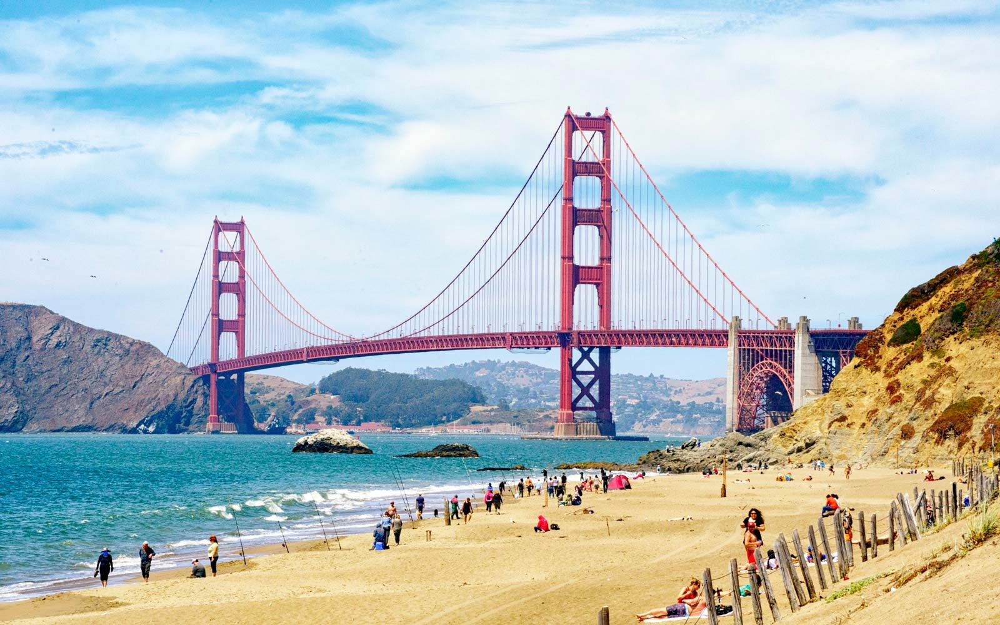

Biography
I am a University student, currently attending at Universidade Europeia taking a course on Games and Apps Development. I am 18 years old and I live in Cascais. I studied Sciences and Technologies in highschool at Colégio Amor de Deus. When I grow up i want to be a Game Developer or a Fisherman (If Game Developer doesn't work out). I am lazy and sarcastic as described by my colleague who is not my friend (I don't have any friends). I like Games, Comic books, Silence and talking to myself (I'm crazy, I know). I don't like vegetables, noise, cod fish and people. My favorite food is Pizza (isn't everybody's favorite food Pizza?) as well as Kebabs, my favorite animal is the Otter, my favorite color is Navy Blue and my favorite band is Gorillaz. If you want to be my friend you can find me on Facebook and no other social media. Cheers! And Goodbye.